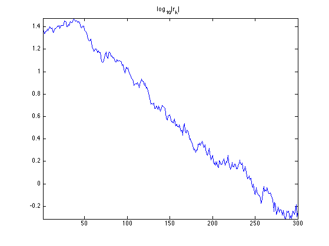
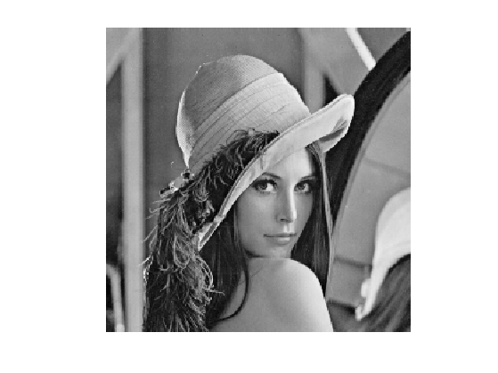
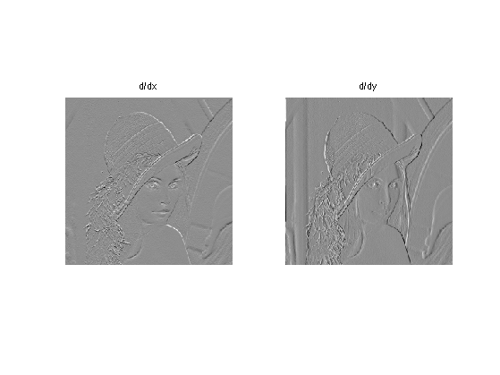
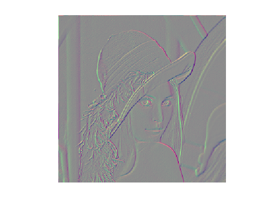
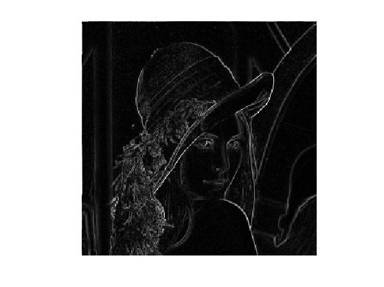
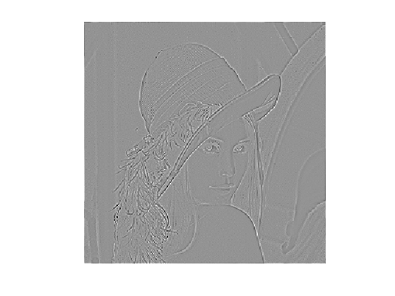
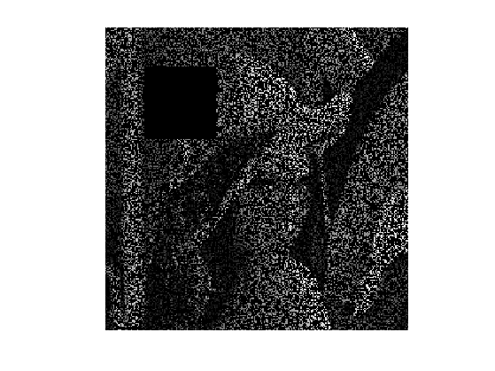
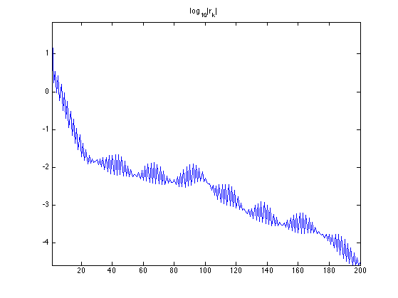
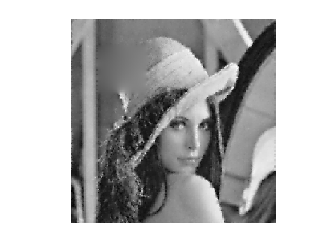
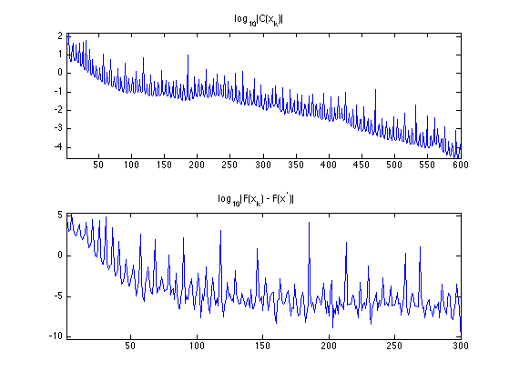

Conjugate Gradient
This tour explores the use of the conjugate gradient method for the solution of large scale symmetric linear systems.
Contents
Installing toolboxes and setting up the path.
You need to download the following files: signal toolbox and general toolbox.
You need to unzip these toolboxes in your working directory, so that you have toolbox_signal and toolbox_general in your directory.
For Scilab user: you must replace the Matlab comment '%' by its Scilab counterpart '//'.
Recommandation: You should create a text file named for instance numericaltour.sce (in Scilab) or numericaltour.m (in Matlab) to write all the Scilab/Matlab command you want to execute. Then, simply run exec('numericaltour.sce'); (in Scilab) or numericaltour; (in Matlab) to run the commands.
Execute this line only if you are using Matlab.
getd = @(p)path(p,path); % scilab users must *not* execute this
Then you can add the toolboxes to the path.
getd('toolbox_signal/'); getd('toolbox_general/');
Conjugate Gradient to Solve Symmetric Linear Systems
The conjugate gradient method is an iterative method that is taylored to solve large symmetric linear systems \(Ax=b\).
We first give an example using a full explicit matrix \(A\), but one should keep in mind that this method is efficient especially when the matrix \(A\) is sparse or more generally when it is fast to apply \(A\) to a vector. This is usually the case in image processing, where \(A\) is often composed of convolution, fast transform (wavelet, fourier) or diagonal operator (e.g. for inpainting).
One initializes the CG method as \[ x_0 \in \RR^N, \quad r_0 = b - x_0, \quad p_0 = r_0 \] The iterations of the method reads \[ \choice{ \alpha_k = \frac{ \dotp{r_k}{r_k} }{ \dotp{p_k}{A p_k} } \\ x_{k+1} = x_k + \alpha_k p_k \\ r_{k+1} = r_k - \alpha_k A p_k \\ \beta_k = \frac{ \dotp{r_{k+1}}{r_{k+1}} }{ \dotp{r_k}{r_k} } \\ p_{k+1} = r_k + \beta_k p_k } \]
Note that one has \(r_k = b - Ax_k\) which is the residual at iteration \(k\). One can thus stop the method when \(\norm{r_k}\) is smaller than some user-defined threshold.
Dimension of the problem.
n = 500;
Matrix \(A\) of the linear system. We use here a random positive symmetric matrix and shift its diagonal to make it well conditionned.
A = randn(n); A = A*A' + .1*eye(n);
Right hand side of the linear system. We use here a random vector.
b = randn(n,1);
Canonical inner product in \(\RR^N\).
dotp = @(a,b)sum(a(:).*b(:));
Exercice 1: (check the solution) Implement the conjugate gradient method, and monitor the decay of the energy \(\norm{r_k}=\norm{Ax_k-b}\).
exo1;
Gradient and Divergence of Images
Local differential operators like gradient, divergence and laplacian are the building blocks for variational image processing.
Load an image \(g \in \RR^N\) of \(N=n \times n\) pixels.
n = 256;
g = rescale( load_image('lena',n) );
Display it.
clf; imageplot(g);
For continuous functions, the gradient reads \[ \nabla g(x) = \pa{ \pd{g(x)}{x_1}, \pd{g(x)}{x_2} } \in \RR^2. \] (note that here, the variable \(x\) denotes the 2-D spacial position).
We discretize this differential operator using first order finite differences. \[ (\nabla g)_i = ( g_{i_1,i_2}-g_{i_1-1,i_2}, g_{i_1,i_2}-g_{i_1,i_2-1} ) \in \RR^2. \] Note that for simplity we use periodic boundary conditions.
Compute its gradient, using finite differences.
s = [n 1:n-1]; grad = @(f)cat(3, f-f(s,:), f-f(:,s));
One thus has \( \nabla : \RR^N \mapsto \RR^{N \times 2}. \)
v = grad(g);
One can display each of its components.
clf; imageplot(v(:,:,1), 'd/dx', 1,2,1); imageplot(v(:,:,2), 'd/dy', 1,2,2);
One can also display it using a color image.
clf; imageplot(v);
One can display its magnitude \(\norm{\nabla g(x)}\), which is large near edges.
clf; imageplot( sqrt( sum3(v.^2,3) ) );
The divergence operator maps vector field to images. For continuous vector fields \(v(x) \in \RR^2\), it is defined as \[ \text{div}(v)(x) = \pd{v_1(x)}{x_1} + \pd{v_2(x)}{x_2} \in \RR. \] (note that here, the variable \(x\) denotes the 2-D spacial position). It is minus the adjoint of the gadient, i.e. \(\text{div} = - \nabla^*\).
It is discretized, for \(v=(v^1,v^2)\) as \[ \text{div}(v)_i = v^1_{i_1+1,i_2} - v^1_{i_1,i_2} + v^2_{i_1,i_2+1} - v^2_{i_1,i_2} . \]
t = [2:n 1]; div = @(v)v(t,:,1)-v(:,:,1) + v(:,t,2)-v(:,:,2);
The Laplacian operatore is defined as \(\Delta=\text{div} \circ \nabla = -\nabla^* \circ \nabla\). It is thus a negative symmetric operator.
delta = @(f)div(grad(f));
Display \(\Delta f_0\).
clf; imageplot(delta(g));
Check that the relation \( \norm{\nabla f} = - \dotp{\Delta f}{f}. \)
dotp = @(a,b)sum(a(:).*b(:));
fprintf('Should be 0: %.3i\n', dotp(grad(g), grad(g)) + dotp(delta(g),g) );
Should be 0: 000
Conjugate Gradient for Lagrangian Inpainting
We consider here the inpainting problem, which corresponds to the interpolation of missing data in the image.
We define a binary mask \(M \in \RR^N\) where \(M_i=0\) if the pixel indexed by \(i\) is missing, and \(M_i=1\) otherwise. We consider here random missing pixel, and a large missing region in the upper left corner.
M = rand(n)>.7; w = 30; M(end/4-w:end/4+w,end/4-w:end/4+w) = 0;
Define the degradation operator \(\Phi : \RR^N \rightarrow \RR^N\), that corresponds to the masking with \(M\), i.e. a diagonal operator \[ \Phi = \text{diag}_i(M_i). \]
Phi = @(x)M.*x;
Compute the observations \(y = \Phi(x)\) with damaged pixels.
y = Phi(g);
Display the observed image.
clf; imageplot(y);
To perform the recovery of an image from the damaged observations \(y\), we aim at finding an image \(x\) that agrees as much with the measurements, i.e. \(\Phi x \approx y\), but at the same time is smooth. We measure the smoothness using the norm of the gradient \(\norm{\nabla x}^2\), which corresponds to a discret Sobolev norm.
This leads us to consider the following quadratic minimization problem \[ \umin{x \in \RR^N} F(x) = \norm{y-\Phi x}^2 + \la \norm{\nabla x}^2. \]
This problem as a unique solution if \(\text{ker}(\Phi) \cap \text{ker}(\nabla) = \{0\}\). This condition holds in our case since \(\text{ker}(\nabla)\) is the set of constant images.
The solution can be obtained by solving the following linear system \[ A x = b \qwhereq \choice{ A = \Phi^*\Phi - \la \Delta, \\ b = \Phi^* y. } \] Here we can remark that for the inpainting problem, \(\Phi^*\Phi=\Phi\) and \(\Phi^*y=y\).
The value of the parameter \(\lambda\) should be small.
lambda = .01;
Operator to invert.
A = @(x)Phi(x) - lambda*delta(x);
Right hand side of the linear system is \[ b = \Phi^*(y) = y. \]
b = y;
Exercice 2: (check the solution) Implement the conjugate gradient method, and monitor the decay of the energy \(F(x_k)\).
exo2;
Display the result.
clf; imageplot(clamp(x));
Conjugate Gradient for Constrained Inpainting
Since there is no noise perturbating the observation, it makes sense to use a \(\lambda\) that is as small as possible.
When \(\lambda \rightarrow 0\), the problem becomes \[ \umin{\Phi x = y} \norm{\nabla x}^2. \] This problem as a unique solution if \(y\in \text{Im}(\Phi)\) and if \(\text{ker}(\Phi) \cap \text{ker}(\nabla) = \{0\}\). This condition holds in our case, as we have already seen.
Introducing Lagrange multiplizers \(u \in \RR^N\), this problem is equivalent to the resolution of the following couple of linear equations \[ \choice{ -\Delta x + \Phi^* u = 0, \\ \Phi x = y. } \]
This corresponds to a single linear system over \(z = (x,u) \in \RR^{N} \times \RR^N \sim \RR^{N \times 2}\) \[ A z = b \qwhereq A = \begin{pmatrix} -\Delta & \Phi^* \\ \Phi & 0 \end{pmatrix} \qandq b = \begin{pmatrix} 0 \\ y \end{pmatrix} \]
Define the operator \(A\). Note that \(x\) is encoded in z(:,:,1) and \(u\) in z(:,:,2).
A = @(z)cat(3, -delta(z(:,:,1)) + Phi(z(:,:,2)), Phi(z(:,:,1)) );
Define the right hand side \(b\).
b = cat(3, zeros(n), y);
Exercice 3: (check the solution) Implement the conjugate gradient method, and monitor the decay of the energy \(F(x_k)) = \norm{\nabla x_k}\) and the constraint \(C(x_k) = \norm{y-\Phi x_k}^2\). Important: be carefull at the initialization of the method.
exo3;
Display the result.
clf; imageplot(x);